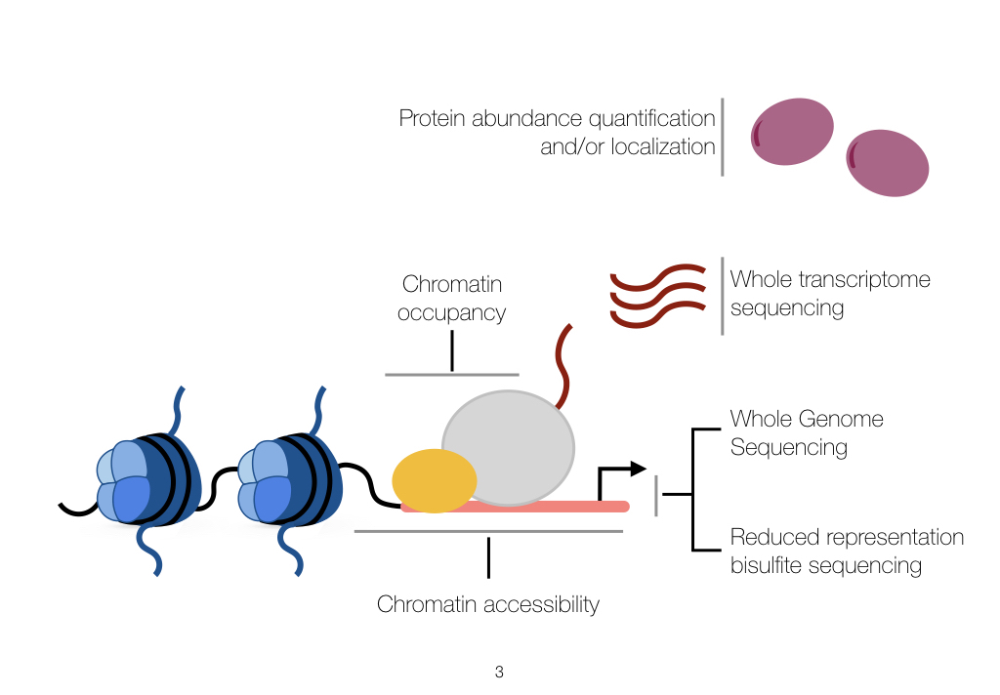
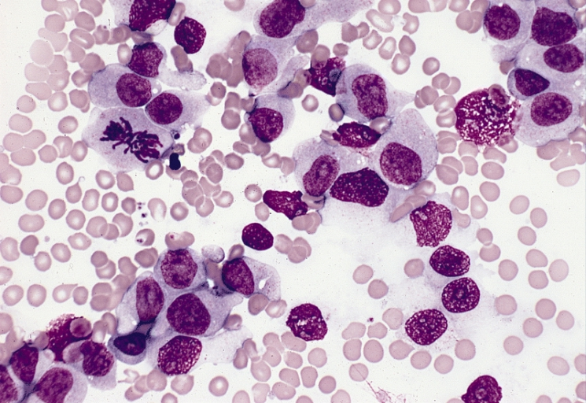

sc-multi-omics
While methods to interrogate all levels of the central dogma in a single cell currently elude our capabilities, we are capable of analyzing one mode of DNA-derived analysis in combination with single-cell transcriptomic analysis. I am particularly interested in exploring this area in primary patient tissues.
Disease
While methods to interrogate all levels of the central dogma in a single cell currently elude our capabilities, we are capable of analyzing one mode of DNA-derived analysis in combination with single-cell transcriptomic analysis. I am particularly interested in exploring this area in primary tissues from cancer patients.
Extracurriculars
I like distance running on occasion and I am currently trying to incorporate more machine learning into my research projects.
I am also pursuing several side projects. I am really interested in dynamic data visualizations, especially those that seek to make intuitive data that matters widely to the public. In addition, I have also been accumulating components for DIY Smart-Home gadgets powered by Raspberry Pi.
A brief introduction
Welcome to my personal website and blog. I like to write about current science, philosophy, and running. I enjoy thinking hard about problems in science; writing is the only way to make sense of your thoughts and get feedback. In this way, we might advance our understanding of the problems we wish to solve.


Chromatin
As we are coming to understand in recent decades, chromatin signalling likely acts as a platform for many biological phenomena. In addition to the chromatin-signalling defects that can spur disease, I am also interested in the basic functions of life from this angle.

Disease Mechanism
I am investigating cancer-driving mechanism in single cells. So far in my PhD, I have gained experience in analyzing hematopoietic cancers.

Data Science
I am a machine learning novice (to the extreme), however I am excited to learn as much as I can to implement novel ideas in biological research.